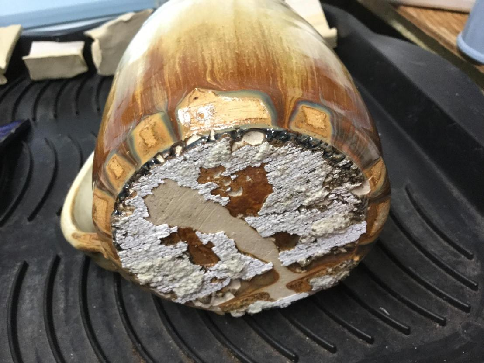
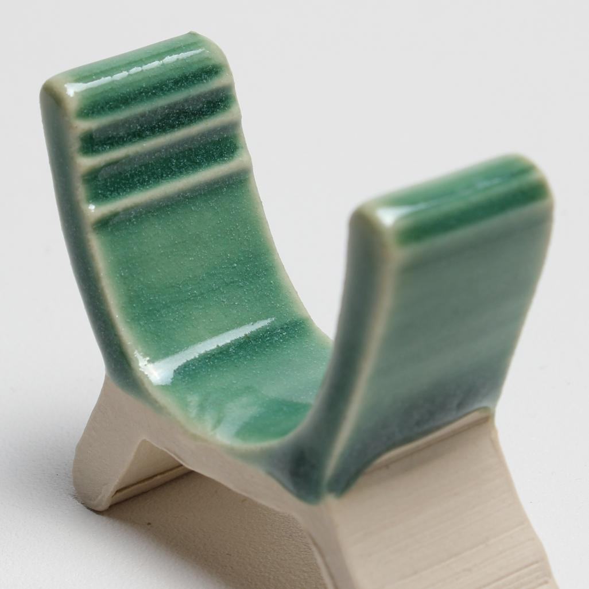
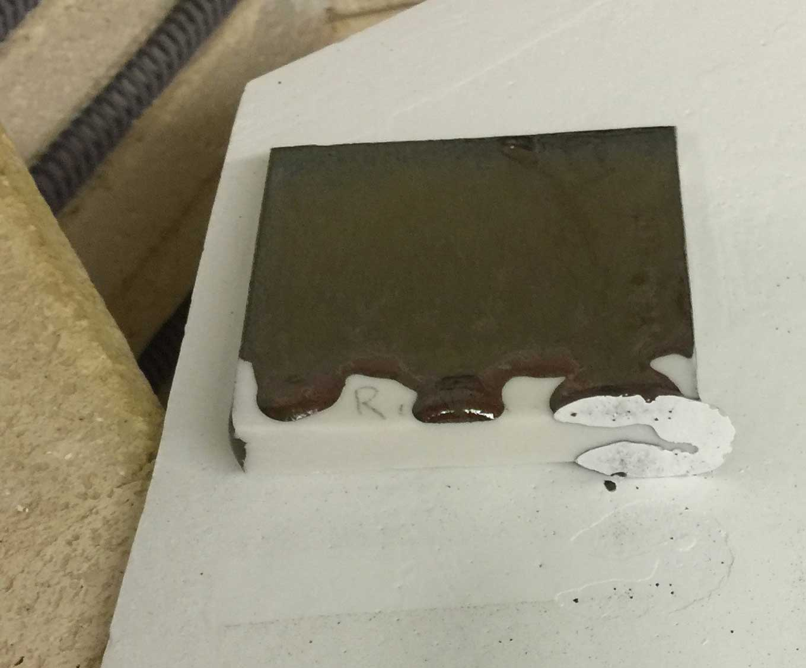
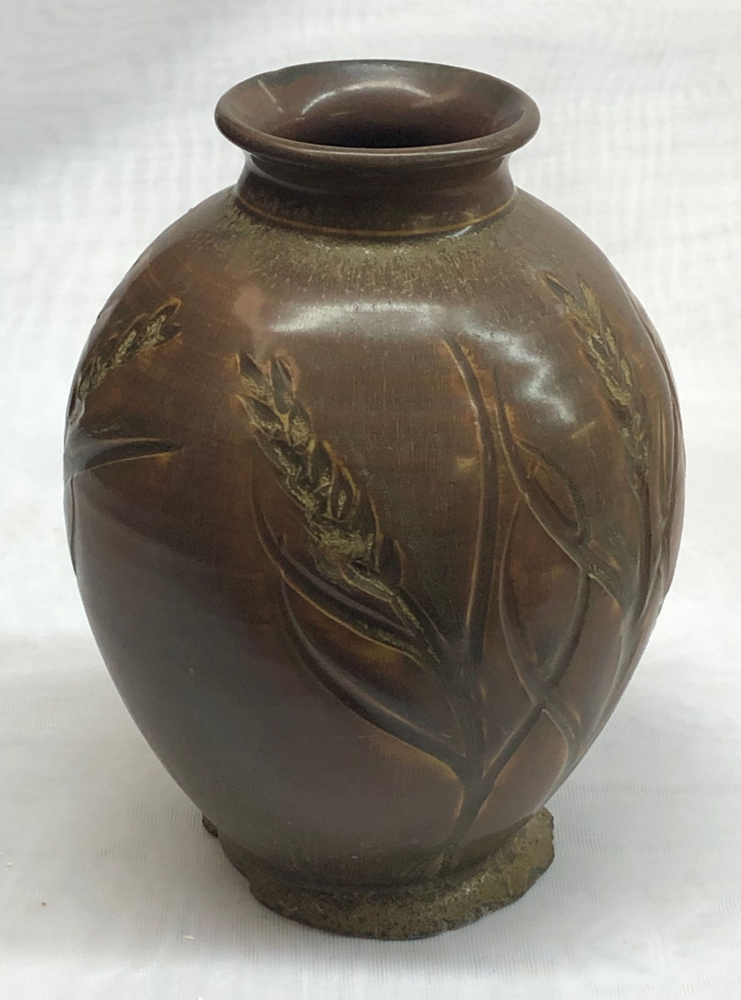
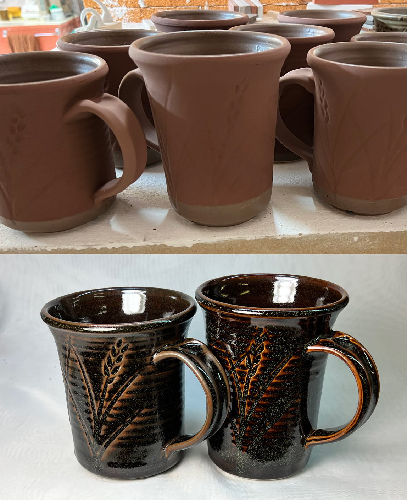

Runny Ceramic Glazes
Glazes of high melt fluidity are likely to run if applied to thickly or have not catcher glaze
Details
Glazes melt. If they do not melt enough then the surface is not glassy and smooth and easy-to-clean. It stains, cutlery marks or leaches metals in to food and drink. On the other hand, if a glaze melts too much it runs down off the ware during firing. But there are other consequences. Glazes that run likely do so because they have excessively high levels of fluxing oxides. Or inadequate Al2O3. Both of these suggest the presence of chemical imbalances that contribute to leaching and lack of durability (just like under-firing). Running glazes often also crystallize on cooling, this may be a sought-after visual (difficult to keep consistent). Or it may be a defect.
Many so called "reactive glazes" are in fact over-fired glazes. It is common, for example, to see glaze recipes labelled as cone 6 that are actually low fire glazes being over-melted to get variegated surfaces. People often learn how to use them (toleration might be a better term), applying them thick enough to get the effect but thin enough that they do not run too much. Or, using a catcher glaze. It is a balancing act. But as already noted, these are best employed on non-functional surfaces).
Runny glazes almost always craze. This is because of two things: More fluxes are needed to make them melt (and fluxes have high thermal expansions). Less Al2O3 and SiO2 are desirable (these are low expansion).
Glazes do not need to be runny to be glossy. Good gloss glazes have high SiO2 and lower Al2O3, but they can be, and usually are, stable on ware and do not run.
Iron oxide is unique in this respect. In oxidation, it is a refractory. But in reduction firing, its fluxing power is geometrically related to percentage, often running much more than would be expected.
Related Information
An extremely runny glaze at cone 6. The runniness is manageable, it has other issues!

This picture has its own page with more detail, click here to see it.
This recipe melts to such a fluid glass because of its high sodium and lithium content (coupled with low silica levels). Reactive glazes like this produce interesting visuals but these come at the obvious cost of being runny like this. But this problem can be managed with glaze technique, a catch glaze on the outside and a liner glaze (to prevent the formation of a lake on the inside bottom (which leads to glaze compression problems). A bigger problem is that drippy glazes like this often calculate to an extremely high thermal expansion. That means food surfaces will craze badly. Another issue that underscores the value of using a liner glaze: Low silica often contributes to leaching of the lithium and any heavy metals present in the colorants.
A runny glaze is blistering on the inside of a large bowl

This picture has its own page with more detail, click here to see it.
This rutile glaze is running down on the inside, so it has a high melt fluidity. "High melt fluidity" is another way of saying that it is being overfired to get the visual effect. It is percolating at top temperature (during the temperature-hold period), forming bubbles. There is enough surface tension to maintain them for as long as the temperature is held. To break the bubbles and heal up after them the kiln needs to be cooled to a point where decreasing melt fluidity can overcome the surface tension. Where is that? Only experimentation will demonstrate, try dropping a little more (e.g. 25 degrees) over a series of firings to find a sweet spot. The hold temperature needs to be high enough that the glaze is still fluid enough to run in and heal the residual craters. A typical drop temperature is 100F.
A problem with brilliantly colored fluid-melt glazes: Micro-crystals

This picture has its own page with more detail, click here to see it.
Crystallization (also called devritrification). You can see the tiny crystals on the surface of this copper stained cone 6 glaze (G3806C). The preferred orientation of metallic oxides is crystalline. When kilns cool quickly there is simply not enough time for oxides in an average glaze to organize themselves in the preferred way and therefore crystals do not grow. But if the glaze has a fluid melt and it cools slowly through the temperature at which the crystals like to form, they will. There is another issue here also: There are tiny dimples in the surface. This is because copper carbonate was used here instead of copper oxide. During firing, it generates carbon dioxide (because it is a carbonate) that bubbles out of the melt, leaving behind dimples that may or may not heal during cooling.
A high feldspar glaze is settling, running and crazing. What to do?

This picture has its own page with more detail, click here to see it.
The original cone 6 recipe, WCB, fires to a beautiful brilliant deep blue green (shown in column 2 of this Insight-live screen-shot). But it is crazing and settling badly in the bucket. The crazing is because of high KNaO (potassium and sodium from the high feldspar). The settling is because there is almost no clay in the recipe. Adjustment 1 (column 3 in the picture) eliminates the feldspar and sources Al2O3 from kaolin and KNaO from Frit 3110 (preserving the glaze's chemistry). To make that happen the amounts of other materials had to be juggled. But the fired test revealed that this one, although very similar, is melting more (because the frit releases its oxides more readily than feldspar). Adjustment 2 (column 4) proposes a 10-part silica addition. SiO2 is the glass former, the more a glaze will accept without losing the intended visual character, the better. The result is less running and more durability and resistance to leaching.
A running glaze has stuck to a kiln shelf. Kiln wash saves the day!

This picture has its own page with more detail, click here to see it.
This is a zircon-based kiln wash. Even though it paints on in a thin layer, there is no problem releasing the very runny glaze from the shelf.
A cone 10R high iron glaze has run off the vase during firing. And crystallized.

This picture has its own page with more detail, click here to see it.
Iron, in the FeO form, is among the most powerful of fluxes in reduction firing. That fluxing action, dependent on the percentage of iron oxide in the recipe, produces two obvious consequences: Running (depending on the degree of reduction) and crystallization (depending on the speed of cooling and the chemistry of the glaze hosting the iron). This piece was slow-cooled during firing, resulting in total crystallization of the surface. The crystals are larger and densely packed at the neck. Their presence, as a thin surface layer, has completely matted it. And, because of the fluxing power of the FeO (present because of the reduction atmosphere in the kiln) enough glaze ran downward off the piece that it was left sitting in a pool of molten glass.
A way to prevent a tenmoku glaze from running onto your kiln shelves

This picture has its own page with more detail, click here to see it.
Tenmoku reduction fired glazes can be so beautiful yet few people use them. One reason is the melt fluidity - runs stick pieces to the kiln shelf. While the melt fluidity is the key to the appearance it is also the curse. These glazes also pool on inside bottoms producing glaze compression issues. And they stretch thin over rims roughening them with any grit from the body or glaze materials. The running onto the shelf issue at least does have a simple solution: The GR10-A base as a catcher glaze on the outside bottoms and a liner on the inside (and even optionally wrapping over the rim). I use a dipping glaze version of it for the insides and a brushing glaze version for the bases (and up the side walls about 1cm). The tenmokus GR10-K1 (left) and GA10-B (right) can be applied thickly and it’s no problem, 5-10 mm of catcher glaze is all it takes to stop the running.
Links
| Oxides | Al2O3 - Aluminum Oxide, Alumina |
| Oxides | SiO2 - Silicon Dioxide, Silica |
| Glossary |
Flux
Fluxes are the reason we can fire clay bodies and glazes in common kilns, they make glazes melt and bodies vitrify at lower temperatures. |
| Glossary |
Ceramic Glaze Defects
Ceramic glaze defects include things like pinholes, blisters, crazing, shivering, leaching, crawling, cutlery marking, clouding and color problems. |
 PayPal | No tracking, No ads, No paywall, No transient content! Just organized, concise information constantly updated and improved. Was this helpful? Consider supporting me. |
| By Tony Hansen Follow me on        |  |
Got a Question?
Buy me a coffee and we can talk 

https://digitalfire.com, All Rights Reserved
Privacy Policy